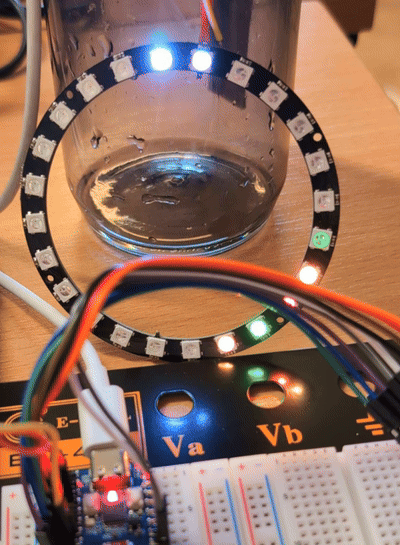
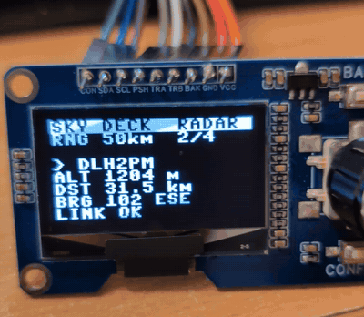
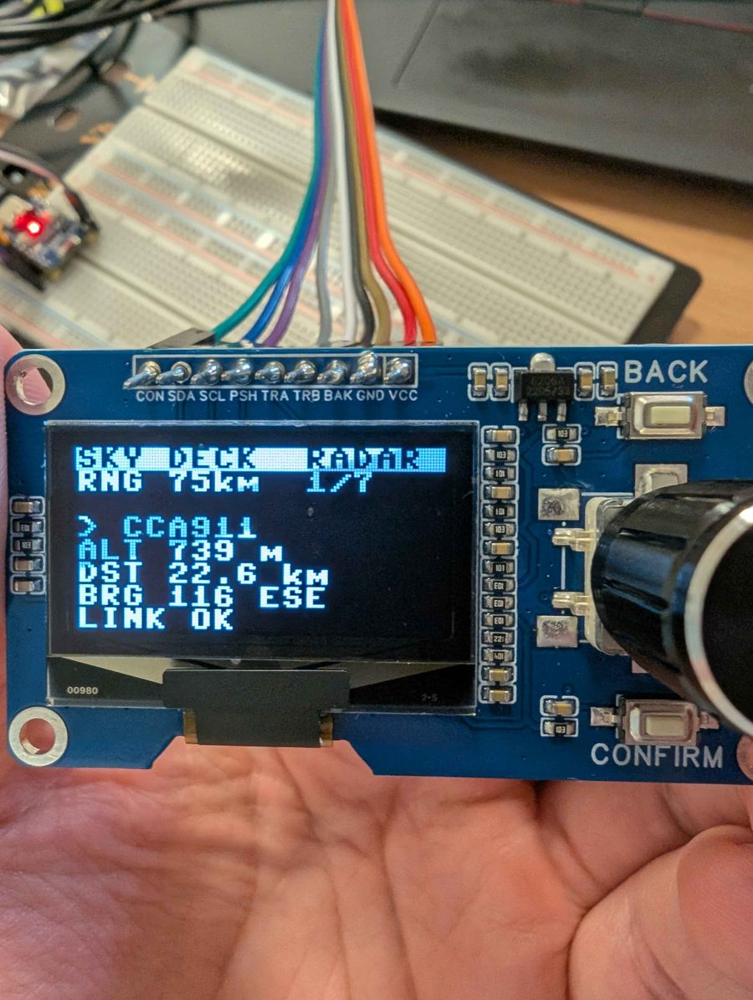

A ring of 24 LEDs that points out every aircraft around you, a screen that tells you which one it is, and a matrix that draws the radar picture. One press and the ring points at the International Space Station instead. Here is how to start it, read it and fix it when something acts up.
Try the controls. The aircraft are real, seen from the hackathon venue in Uppsala. ARN is Stockholm Arlanda airport.


> LINK OK and > SCAN ADS-B. Aircraft show up after about ten seconds.The ring is a compass. Every aircraft within range becomes a dot in the direction the plane actually is, seen from where the radar stands.
| Control | Where | Does |
|---|---|---|
| Turn the knob | Screen module | Selects an aircraft, nearest first. Its dot blinks white on the ring. |
| Push the knob | Screen module | Zoom: 25, 50 or 75 km. Starts at 75. |
| BACK | Screen module | Switches between radar and ISS. |
| CONFIRM | Screen module | Free. Saved for a voice that reads out the flight. |
| BOOT | Each board | Short press changes zoom, long press switches between radar and ISS. |
| RESET | Each board | Restarts the board. Fixes most things. |
The board's own RGB LED is green for fresh data, red for stale data and blue for no WiFi.

LINK LOST 34s means nothing new for 34 seconds.The ring points at the ISS. It circles the Earth in about 90 minutes, so over an afternoon the dot wanders round the ring. White means the station is in sunlight, blue that it is in the Earth's shadow. When it is above the horizon, within about 2,250 km, the whole ring pulses and the screen says ** OVERHEAD **.
The 8x8 matrix is a separate unit with its own board running the same code. The centre is the radar, the top edge is north and the edges are the current range, so here you see distance as well as direction. Turn it so the white pixel at startup ends up top left. The matrix does not know which aircraft is selected on the screen.
The board cannot find a WiFi network it knows. Check that the network is on and on 2.4 GHz; some phone hotspots switch back to 5 GHz by themselves. The board retries every ten seconds, no restart needed. If a cheap board never connects, try WIFI_TXPOWER = 8.5.
The network is down or the data source is not answering, the same as LINK LOST on the screen. The board switches to the backup source by itself.
Press RESET. If it keeps happening, reseat the SDA and SCL wires; they work loose when the module moves. Noise on most of the screen with a single line of text means the wrong driver: set OLED_KIND = "sh1106".
Unplug USB and check the three wires: data to the ring's DI (not DO), 5V and GND. Wire colours vary between makers, so go by the labels printed on the ring.
Many power banks switch off when the current draw is low, and the radar draws very little. Use a phone charger instead.
At 25 km it is often empty when traffic is quiet. Push the knob until the screen says RNG 75km.
The white north dot is not facing north: turn the ring with a phone compass. If the dots move the wrong way as aircraft fly past, the ring is upside down or numbered the other way. Flip it LEDs up, or set CLOCKWISE = False.
Swap ENC_A and ENC_B in the board profile, or try ENC_STEPS = 2.
At startup a dot walks through the pixels in wiring order from the white pixel 0. Turn the matrix so pixel 0 is top left. If the dot zigzags, set GRID_SERPENTINE = True.
You need an ESP32-C3 board, a 24-LED WS2812 ring and a USB-C cable. The screen module and the matrix are optional. The parts list, flashing MicroPython and setting your location are in the README.
| Part | Pin |
|---|---|
| Ring DI (data in, not DO) | GPIO3 |
| Ring 5V | 5V |
| Ring GND | GND |
| Screen VCC | 3V3, not 5V |
| Screen GND | GND, shared with the ring on a breadboard |
| SDA / SCL | GPIO4 / GPIO5 |
| PSH (push the knob) | GPIO6 |
| TRA / TRB (the knob) | GPIO7 / GPIO0 |
| BAK | GPIO1 |
| CON | GPIO2 |
The matrix unit is an ESP32-C3 SuperMini soldered to the matrix, with DIN on GPIO4. Nothing else to wire.
git clone https://github.com/AntonSatt/sky-radar.git cd sky-radar ./scripts/till-kortet.sh # copy the code to the ring unit and run it ./scripts/till-kortet.sh matris # the same for the matrix unit ./scripts/wifi.sh # add another WiFi network ./scripts/kolla-api.sh # do the data sources answer? ./terminal/radar.py # the radar in the terminal, no hardware python3 tests/test_core.py # the tests